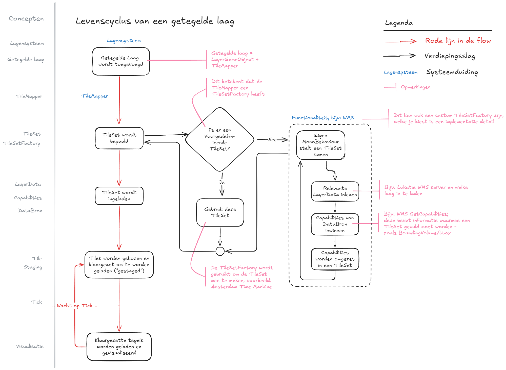
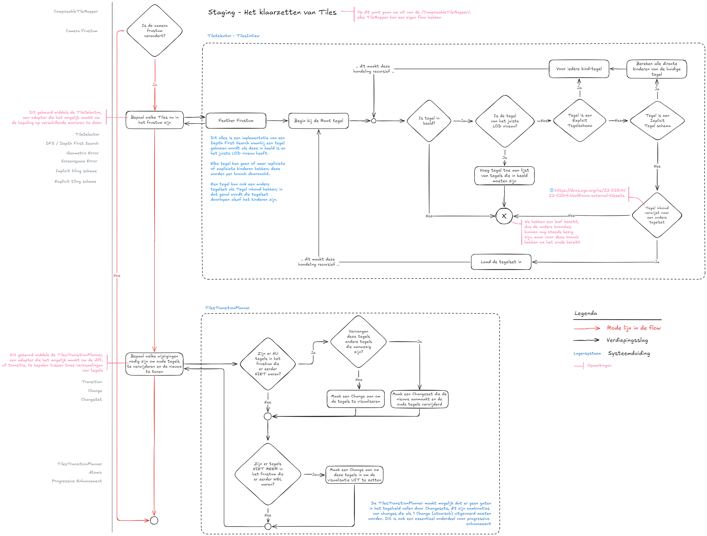
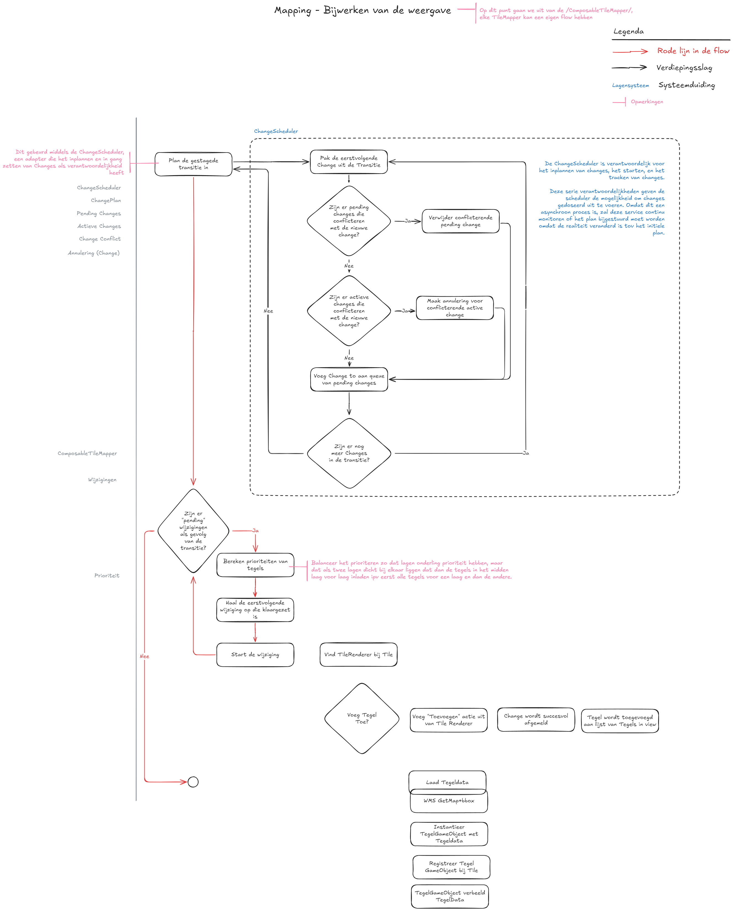

Tegelsysteem
Tegelsysteem
Doelen
Functionaliteit
-
Uitbreidbaarheid
- Ondersteuning voor nieuwe GIS-standaarden (WFS, OGC API Features, WMS)
- Ondersteuning voor extra bestandsformaten (PNG, Raster, GLB, FBX, OBJ)
-
Laagstructuur & Databronnen
- Eén TileSet kan meerdere lagen visualiseren vanuit gedeelde bron (bijv. WMS)
- Eén TileSet kan tegels uit andere TileSets bevatten als remote TileSet
-
Authenticatie
- Ondersteuning voor afgeschermde bronnen met authenticatie
-
Featurebeheer
- Features kunnen in meerdere tegels voorkomen, maar worden slechts eenmaal gerenderd; zie Features.
- Features moeten bevraagd kunnen worden middels querying.
-
Styling & Events
- Event-systeem voor beïnvloeding van tegels (bijv. styling bij creatie)
- Mechanisme voor verversen van tegels bij runtime-styling
Tilingstructuur
-
LOD-ondersteuning (HLOD)
- Variabele tegelgrootte (zoals 3D Tiles)
- Variabele databron (zoals Cartesian Tiles)
- Combinatie van beide (bijv. WMS op afstand/lokaal)
-
Tilingmodellen
- Impliciet tiling voor wereld-dekkende datasets
- Expliciet tiling voor vooraf gedefinieerde hiërarchieën
-
Geometric Error Threshold
- Instelbare fouttolerantie voor LOD-keuze
Architectuur & Techniek
-
Gebaseerd op field-tested standaarden en concepten
- 3D Tiles
- GeoJSON
- OGC API
- Tiles
- Maps
- Features
- OGC WMS
- OGC WMS
- OGC WFS
-
Coördinaten & Projectie
- Abstract Coordinate System; projectie door developers configureerbaar.
- Aanbevolen: EPSG:4978 (XYZ)
- Ondersteuning voor EPSG:4979 (lat/lon/height) in bounding volumes
-
Floating Origin
- Compatibel zonder directe koppeling
-
Unity-integratie
- Intuïtieve structuur met MonoBehaviours & ScriptableObjects voor configuratie
Niet-functionele aspecten
-
Performance
- Caching van tegels en datasets
- Minimaliseren van geheugenverbruik (WebGL-geschikt)
- Actieve resource-opruiming vereist
-
Robuustheid
- Fouttolerantie bij netwerkproblemen of externe fouten
-
Gebruiksvriendelijkheid
- Eenvoudig beheer en uitbreiding van datasets
-
Debugging
- Visuele tools voor tile-analyse en debugging
-
Laadstrategie
- Progressive enhancement: eerst goedkope, daarna detail
- Prioritering: nabijgelegen tegels eerst laden
Expliciete en impliciete TileSets
Bij het ontwerpen van een tegelsysteem maken we onderscheid tussen expliciete en impliciete tegelsystemen. Beide benaderingen beschrijven hoe tegels binnen een (hiërarchische) structuur worden georganiseerd en aangesproken, maar ze verschillen fundamenteel in hoe deze wordt gedefinieerd.
Expliciet Tegelsysteem
Een expliciet tegelsysteem beschrijft elke tegel individueel, inclusief zijn positie, relatie tot andere tegels en metadata. Hierbij maken we gebruik van een vooraf gedefinieerde lijst van tegels in de TileSet. Elke tegel kent zijn kinderen expliciet, inclusief verwijzingen naar onderliggende tegels.
Kenmerken
- Structuur is volledig gespecificeerd.
- Onderlinge relaties (ouder-kind) zijn expliciet gedefinieerd.
- Geschikt voor complexe hiërarchieën of geoptimaliseerde datastructuren.
- Maakt vaak gebruik van LOD's (Levels of Detail) per tegel.
Voordeel: Volledige controle en flexibiliteit over de positie, hiërarchie en metadata per tegel.
Nadeel: Grotere initiële payload en ongeschikt voor grootschalige datasets.
Impliciet Tegelsysteem
Een impliciet tegelsysteem beschrijft geen individuele tegels, maar maakt gebruik van een algoritme om tegels af te leiden op basis van een vaste structuur. Dit systeem is schaalbaar en efficiënt, omdat de hiërarchie en locatie van een tegel volledig kunnen worden afgeleid uit de tegel-ID.
Netherlands3D ondersteunt binnen het impliciete systeem drie hoofdstructuren:
1. Quadtree De quadtree-structuur deelt de ruimte op in vier gelijke kwadranten per niveau. Elke tegel heeft maximaal vier kinderen (NO, NW, ZO, ZW). Deze structuur is ideaal voor tweedimensionale datasets of geografische informatie.
2. Octree De octree is de driedimensionale tegenhanger van de quadtree. Elke tegel wordt opgesplitst in acht kinderen, waarbij de ruimte langs de x-, y- en z-as wordt gehalveerd. Deze structuur is geschikt voor volumetrische datasets of 3D-scènes met LOD.
3. Uniform Grid Bij een uniform grid worden tegels op een vlak verdeeld in een vast raster, zonder hiërarchie. Dit type wordt meestal gebruikt wanneer elke tegel gelijkwaardig is en er geen behoefte is aan dynamische detaillering of LOD.
Kenmerken van impliciete systemen:
- Hiërarchie wordt bepaald door een patroon (bijv. depth en tile indices).
- Geen beschrijving van elke individuele tegel nodig: structuur is afleidbaar.
- Lichtgewicht en geschikt voor grote datasets.
- Relaties worden bepaald door index-berekening in plaats van expliciete verwijzingen.
Voordeel: Hoge schaalbaarheid en lage overhead.
Nadeel: Minder flexibiliteit voor per-tegel metadata of uitzonderingen.
Zie https://github.com/CesiumGS/3d-tiles/blob/main/specification/ImplicitTiling/README.adoc voor details hoe de 3D Tiles specificatie omgaat met Impliciete Tiling, Tilekit zijn ontwerp is gebaseerd op deze principes met extra ondersteuning voor uniforme grids.
Levenscyclus van een kaartlaag

De levenscyclus van een kaartlaag bestaat uit de volgende stappen:
- Inladen van een laag: in dit stadium worden de capabilities opgehaald van de gekozen databron, en omgezet in Tilekit zijn eigen tegelset definitie. Dit garandeert dat het klaarzetten van de tegels en het bijwerken van de weergave altijd dezelfde informatie hebben, ongeacht de bron.
- Klaarzetten van tegels (Staging): Bij het klaarzetten van tegels wordt bepaald welke tegels ingeladen en ontladen moeten worden; hierbij wordt gekeken naar de actuele situatie, een gewenste situatie en lopende wijzigingen om te bepalen welke wijzigingen in de wachtrij gezet moeten worden.
- Bijwerken van de weergave (Mapping): In dit stadium wordt de wachtrij van wijzigingen afgelopen en wijzigingen ingestart en gemonitored.
Het klaarzetten van de tegels (Staging) en het bijwerken van de weergave (Mapping) is een herhalend proces. De standaard aanname van Tilekit is dat een Timer klasse geimplementeerd is die beide stadia in volgorde afhandeld; maar Tilekit ondersteunt ook dat het stagen en mappen door andere processen worden uitgevoerd.
Staging en mapping zijn idempotent
Bovenstaande betekent staging en mapping geen afhankelijkheid mogen hebben en dat beide handelingen Idempotent zijn. Staging mag meermaals uitgevoerd kunnen worden voordat mapping wordt uitgevoerd en andersom.
Deze ontwerpkeuze is fundamenteel om asynchrone handelingen te ondersteunen omdat de mapping fase alleen een change
kan starten, maar de change zelf meerdere frames en cycli van staging zou kunnen duren.
Inladen van een TileSet
In hoofdstuk 7.4. Datamodel is beschreven welke elementen de definitie van een TileSet heeft. Hiermee kan je flexibel een breed scala aan tegelsystemen mee weergeven, maar dit van begin af aan inrichten is een uitdaging zonder de effecten te weten van alle knoppen waar je aan kan draaien.
Om dit proces te versimpelen zijn er 2 ondersteunende services die gebruikt kunnen worden om op een simpele manier een TileSet te kunnen configureren:
- TileSetBuilder, een Builder service waarmee je met een paar korte instructies tiles kan builden en een TileSet valideren.
- TileSetFactory, een Factory service waarmee je in een keer een gehele TileSet instantieert met een specifieke configuratie.
Middels dit proces kunnen willekeurige databronnen omgezet worden in TileSet definities, en uniform afgehandeld worden in de rest van het systeem.
Voorwaarden voor een valide TileSet
Spatial Coherence
Bij het omzetten van de data van een databron naar expliciete tegels is van belang dat de bounding volume van alle tegels Spatial Coherence hebben. Deze beperking zorgt ervoor dat tegels benaderd kunnen worden als een R-tree datastructuur en geeft optimalisatiemogelijkheden, zoals het volledig overslaan van een complete branch aan tegels als de applicatie niet eens in de buurt is.
Voorbeeld
Als we ergens in Nederland naar een lokatie kijken dan kunnen we alle tegels -van elk LOD niveau- overslaan buiten Nederland, zoals Duitsland of geheel Afrika. Dit kan alleen als de tegels in Nederland Spatial Coherence hebben.
Aanwezigheid van een Geometrische Error
Elke tegel moet een geometricError waarde bevatten. Deze waarde, uitgedrukt in meters, geeft aan hoeveel detail er verloren gaat als deze tegel wordt weergegeven in plaats van zijn fijnmazigere kindtegels. Zonder deze waarde is automatische LOD-switching niet mogelijk.
Oplopende Detailniveaus (Geometrische Hiërarchie)
Kindtegels moeten altijd een lagere geometricError hebben dan hun ouder. Dit weerspiegelt de hiërarchische structuur van het tegelsysteem, waarbij lagere niveaus (meer gedetailleerde tegels) nauwkeuriger zijn.
Als deze relatie niet klopt, kan de applicatie verkeerde beslissingen nemen over welke tegel in beeld moet komen, met visuele artefacten of onnauwkeurigheden als gevolg. Het afdwingen van deze regel zorgt ervoor dat LOD-logica zoals Screen Space Error correct werkt.
TileSetBuilder
De TileBuilder biedt een aantal gemaksfuncties waarmee een TileSet gemakkelijk opgebouwd kan worden. Aangezien een TileSet zelf bestaat uit een paar korte instructies en vervolgens een boomstructuur aan Tile objecten zal de TileBuilder
Voorbeeld:
quadTreeTileBuilder = TileSetBuilder.QuadTree(bounds);
TileSetFactory
Staging
De Staging fase in de TileMapper is bedoeld om te bepalen welke tegels in- en uitgeladen moeten worden om in de 7.3.4. Mapping fase dit in gang te kunnen zetten. De staging fase, net als de mapping fase is bedoeld om idempotent uitgevoerd te worden. Dit betekent dat het mogelijk is om meermaals deze stap uit te kunnen voeren en dat de uitkomst altijd 1-op-1 toegepast kan worden in de mapping fase.

Het staging proces is verdeeld in 3 stappen:
- Welke tegels zijn er nu in beeld middels de
TilesInViewverzameling - Welke tegels moeten er in beeld komen middels een
TileSelectorservice - Welke wijzigingen moeten worden uitgevoerd om van de huidige naar de nieuwe situatie te komen -genaamd een Transition - middels een TilesTransitionPlanner.
Tegel selectie
De TileSelector is een service die bepaald welke tegels er in beeld zouden moeten zijn. Van de TileSelector kunnen meerdere strategieen zijn, degene die standaard toegepast wordt is de "TilesInView" tile selector.
De TilesInView tile selector zal middels een "Depth First Search" de TileSet definitie doorlopen. Depth First Search is een recursief zoek algoritme waarbij je begint met een enkele "root" tegel, en vervolgens de volgende vragen stelt:
- Is deze tegel in beeld?
- Als de tegel niet in beeld is, dan eindigt onze zoektocht. Deze tegel wordt niet geladen en we negeren zijn kinderen,
- Anders:
- Is het type van refinement "Add" of "Replace"?
- is het type "Replace", dan starten we een serie van geselecteerde tegels
- is het type "Add", dan voegen we deze tegel toe aan de serie van geselecteerde tegels
- Is dit het juiste LOD voor deze tegel?
- Als de juiste LOD van een tegel gevonden dan onthouden we de serie aan geselecteerde tegels,
- Anders: herhaal deze stappen voor elke kind-tegel van deze tegel
Aan het einde van deze handeling zouden we een lijst moeten hebben van tegels die in beeld moeten gaan zijn. In stap 2 is dus van belang dat we niet altijd op zoek zijn naar 1 tegel in een aftakking van de R-tree. Het is ook mogelijk een reeks aan kinderen te verkrijgen omdat bij een ADD de kind tegel niet de ouder tegel vervangt, maar juist in combinatie met een ouder tegel wordt ingeladen.
// TODO Update schema, en controleer de exacte werking als afwisselend ADD en REPLACE door elkaar gebruikt worden
Wat is "de juiste LOD"?
Tegels moeten een "Geometric Error" hebben. De geometric error is een maat (in meters) die zegt hoe "grof" een tegel is in vergelijking met zijn fijnere kinderen. Het komt neer op: hoeveel detail je mist als je deze tegel toont in plaats van zijn onderliggende (meer gedetailleerde) tegels.
Tijdens het draaien van de app gebruiken we deze geometricError om te bepalen of een tegel voldoende detail geeft op het scherm. Dat doen we door het om te rekenen naar screen space error (SSE) – dat is de fout uitgedrukt in pixels op je scherm.
Bijvoorbeeld:
- Stel: een tegel heeft een geometricError van 50 meter.
- Als die 50 meter visueel overeenkomt met 10 pixels op het scherm, dan is de SSE = 10.
- Als je een maximum SSE van bijvoorbeeld 8 pixels hanteert, dan weet je: deze tegel moet worden vervangen door zijn kinderen, want hij is niet precies genoeg.
Bepalen van de juiste LOD
De TileSelector gebruikt onderstaande logica om te bepalen of een tegel voldoende detail biedt:
- Bepaal het dichtstbijzijnde punt van de bounding volume van de tegel ten opzichte van de camera.
- Bereken de afstand van de camera tot dit punt, aangeduid als
distanceToCamera. - Bereken de screen space error (SSE) met de formule:
SSE = (geometricError / distanceToCamera) * schermProjectieFactor
In ons systeem is de schermProjectieFactor altijd 1. Dit betekent dat deze vermenigvuldiging in de praktijk kan
worden weggelaten, waardoor de vereenvoudigde formule in code vaak als volgt wordt gebruikt:
SSE = geometricError / distanceToCamera
- Vergelijk met de ingestelde drempelwaarde
maximumScreenSpaceError:- Als
SSE > maximumScreenSpaceError: de tegel is niet gedetailleerd genoeg → zoom in naar kindtegels. - Als
SSE <= maximumScreenSpaceError: deze tegel is voldoende → toon deze en stop het inzoomen.
- Als
Let op: als distanceToCamera bijna nul is (bijvoorbeeld als de camera zich binnen de bounding volume van een tegel bevindt), dan wordt de SSE oneindig groot. In dat geval wordt de SSE behandeld als float.MaxValue.
Mapping
Dit hoofdstuk is nog in ontwikkeling.

- Tegels mogen pas "InView" als een change succesvol afgemeld is
- Tegel GameObjecten kunnen er al zijn voordat een Tegel in view is; dan kan een Change nog pending zijn
- Als een dergelijke change geannuleerd wordt; dan moet het gameobject opgeruimd worden
- Ergo: Changes moeten een Cancel mogelijkheid hebben, die een contra actie/opruim actie uitvoert
- Een Tegel kent een aantal dingen
- de "Tile" definitie uit de TileSet
- de Tegeldata - zoals de GeoJSON - die uit een WFS ingeladen is
- een visualisatie - zoals een GameObject of PolygonVisualiser?
Verversen van tegels
Externe factoren, zoals styling of filtering, kunnen reeds ingeladen tegels beïnvloeden. Wanneer dit gebeurd is het nodig om tegels te kunnen verversen.
Om dit te kunnen doen, is het nodig dat een tegel gemarkeerd kan worden als Dirty. Dit geeft aan dat een tegel zijn staat moet terugbrengen naar de "primaire staat" - zoals deze ontvangen was van de brondata - en dan opnieuw alle aanpassingen toepast, zoals Styling of Filtering.
De volgende voorwaarden zijn hierbij van belang:
- Dit gebeurt niet onmiddellijk, maar op zijn minst 1 frame later -of zelfs langer- zodat niet onnodig bewerkingen uitgevoerd worden.
- Het verversen van een enkele tegel is een synchroon proces zodat er geen verstoring voor de gebruikersbeleving.
Als een ingrijpendere wijziging nodig is, dan moet de tegel vervangen worden middels een ChangeSet zodat de oude tegel in beeld blijft en een nieuwe tegel asynchroon wordt aangemaakt.
Datamodel
Todo
Kijk naar https://github.com/CesiumGS/3d-tiles/blob/main/specification/ImplicitTiling/README.adoc#availability om na te gaan of er een betere manier is om de ID van een tegel te bepalen middels de Morton Z-order curve.
classDiagram
class Tileset {
+ Tile Root
}
class Tile {
Guid Id
BoundingVolume BoundingVolume
double GeometricError
TileContents Contents
Matrix4x4 Transform
Metadata Metadata
Tiles Children
ImplicitTilingScheme ImplicitTiling = None
MethodOfRefinement Refine = MethodOfRefinement.Replace
}
class Tiles {
}
class TileContents {
}
class BoundingVolume {
+ Vector3Double Center
+ Vector3Double Size
+ BoundsDouble ToBounds()
}
namespace BoundingVolumes {
class BoxBoundingVolume
class SphereBoundingVolume
class RegionBoundingVolume
}
class TileContent {
TemplatedUri Uri
BoundingVolume BoundingVolume
Metadata Metadata
}
class Metadata {
}
class ImplicitTilingScheme {
+ SubdivisionScheme SubdivisionScheme
+ int SubtreeLevels
+ int AvailableLevels
+ TemplatedUri Subtrees
}
namespace ImplicitTilingSchemes {
class None {
}
class UniformGrid {
+ Dimensions Dimensions
}
class QuadTree {
+ int SubtreeLevels
+ int AvailableLevels
}
class OcTree {
+ int SubtreeLevels
+ int AvailableLevels
}
}
class MethodOfRefinement {
Replace
Add
}
class SubdivisionScheme {
UniformGrid
QuadTree
Octree
}
<<Enumeration>> MethodOfRefinement
<<Enumeration>> SubdivisionScheme
<<Abstract>> BoundingVolume
<<Abstract>> ImplicitTilingScheme
Metadata --|> Dictionary~string, string~
BoundingVolume <|-- BoxBoundingVolume
BoundingVolume <|-- RegionBoundingVolume
BoundingVolume <|-- SphereBoundingVolume
ImplicitTilingScheme <|-- None
ImplicitTilingScheme <|-- UniformGrid
ImplicitTilingScheme <|-- QuadTree
ImplicitTilingScheme <|-- OcTree
Tileset "1" *-- "1" Tile : Has
Tile "1" *-- "1" BoundingVolume : Affects
Tile "1" *-- "1" TileContents : Has
TileContents "1" *-- "0..*" TileContent : Contains
Tile "1" *-- "1" Metadata : Is described by
Tile "1" *-- "1" Tiles : Has
Tiles "1" *-- "0..*" Tile : Contains
Tile "1" *-- "0..1" ImplicitTilingScheme : Can have
Tile "1" *-- "1" MethodOfRefinement : Will interact with parent by
TileContent "1" *-- "1" BoundingVolume : Affects
TileContent "1" *-- "1" Metadata : Is described by
TileContent "1" ..> "0..1" Tileset : Can import external tileset
ImplicitTilingScheme "1" *-- "1" SubdivisionScheme : Is subdivided as- TileContent mag ook verwijzen naar een externe tileset: https://docs.ogc.org/cs/22-025r4/22-025r4.html#core-external-tilesets
Services
classDiagram
class TileMapper {
+ Load(TileSet tileSet)
+ Stage()
+ Commit()
}
class ComposableTileMapper {
TileSelector TileSelector
ChangeScheduler ChangeScheduler
TileRenderer TileRenderer
}
class LegacyCartesianTilesTileMapper {
}
class Legacy3DTilesTileMapper {
}
class TileSelector {
+ Select()
}
class TileRenderer {
+ Add()
+ Replace()
+ Remove()
}
class ChangeScheduler {
ChangePlan ChangePlan
+ Schedule()
+ Apply()
}
class ImmediateChangeScheduler {
}
class ChangePlan {
List~Change~ Changes
+ Plan()
+ FindByTile
+ Cancel
}
class Change {
StatusOfChange Status
TypeOfChange Type
ChangeAction Action
Tile Tile
Action~Change~ Planned
Action~Change~ Triggered
Action~Change~ Cancelled
Action~Change~ Completed
+ bool IsPending
+ bool InProgress
+ bool IsCancelled
+ bool IsCompleted
+ Plan()
+ Trigger()
+ Cancel()
+ Complete()
+ UsingAction()
+ Add()$
+ Remove()$
}
class ChangeSet {
+ Changes()
}
class TypeOfChange {
Add
Remove
}
class StatusOfChange {
Pending
InProgress
Cancelled
Completed
}
<<MonoBehaviour>> TileMapper
<<ScriptableObject>> TileSelector
<<ScriptableObject>> ChangeScheduler
<<Enumeration>> StatusOfChange
<<Enumeration>> TypeOfChange
ImmediateChangeScheduler --|> ChangeScheduler
TileMapper <|-- ComposableTileMapper
TileMapper <|-- LegacyCartesianTilesTilesetRenderer
TileMapper <|-- Legacy3DTilesTilesetRenderer
note for TileMapper "Selects the Tiles in view,
stages these tiles by passing to the ChangePlan
which tiles need to be added, removed or replaced"
note for TileMapper "Can also be a wrapper around legacy
tile handlers, in which case nothing further of the new
system is used"
TileMapper o-- "1" TileSet
ComposableTileMapper *-- "1" TileSelector
ComposableTileMapper *-- ChangeScheduler
ComposableTileMapper *-- TileRenderer
ChangeScheduler *-- ChangePlan
ChangePlan *-- "*" Change
ChangePlan *-- "*" ChangeSet
ChangeSet o-- Change
Change *-- TypeOfChange
Change *-- StatusOfChange
Change o-- Tile
Projector has been omitted from the scheme above because I need to think about it
Middlewares for styling need to be added